P23 r01 · Bảo hành & phiên quét
Bốn panel · 494×950 CSS px · 30/09/2026
Chờ review hình thức · Hành vi prototype đạt · Production chưa xác minh131 test logic · 16 nhóm P23 +25 nhóm hồi quy · 30 tổ hợp layout P23 ·4 viewport footer. P22 r03 đã tạm chốt, state đồng bộ bổ sung sau.
Mở preview ·
Báo cáo ·
Nguồn/số đominhanh / preview → Lịch sử → Bảo hành hoặc Phiên quét. Phiên quét mặc định chưa có nguồn; chọn Mẫu B23 ngoài khung app. Reload/đăng xuất mất dữ liệu thử.
Baseline B23
Ảnh gốc khác frame494×950 hiện đã khóa; không kéo méo để tự tuyên bố pixel-perfect.
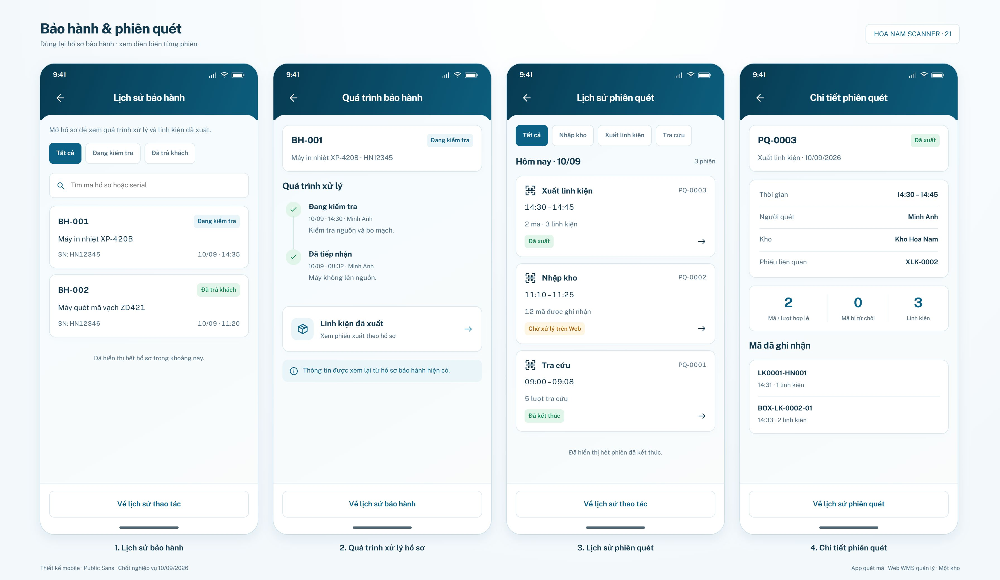
S01 · Lịch sử bảo hành
Nguồn hiện có8 hồ sơ P09, không chép2thẻ ra store riêng.
Trước · implementation kế thừa P08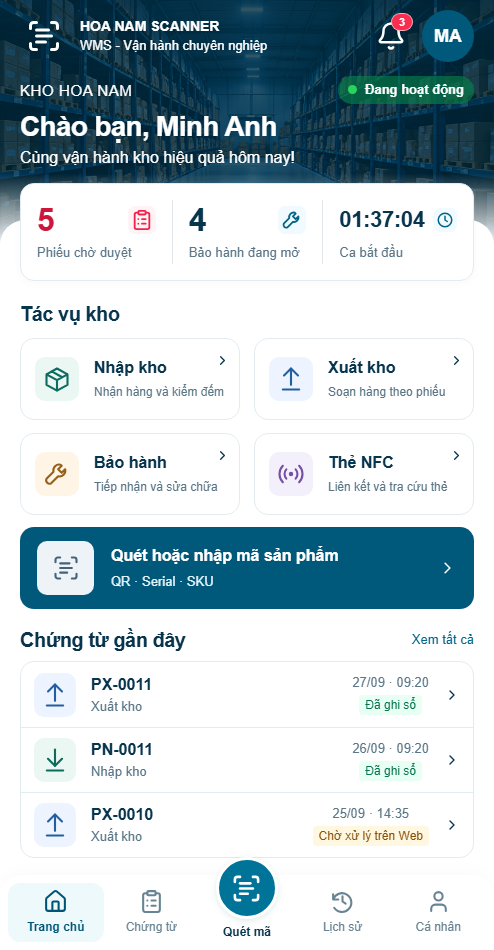
Sau · P23 r01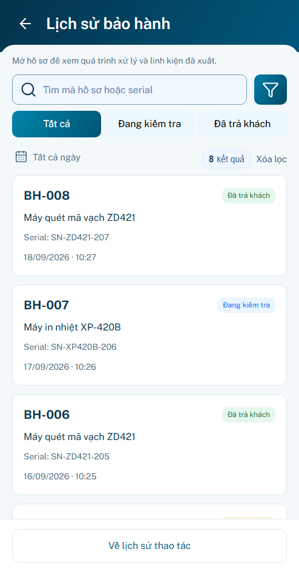
S02 · Quá trình bảo hành
Timeline có thêm event xuất linh kiện từ owner; closed case chỉ đọc.
Trước · implementation kế thừa P08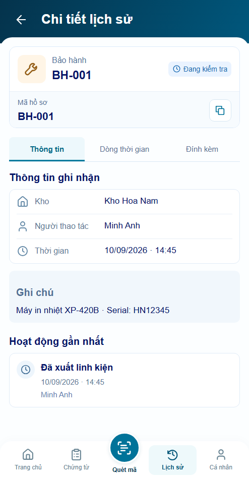
Sau · P23 r01
S03 · Lịch sử phiên quét
Nguồn B23 riêng, mặc định chưa khả dụng. B08 generic giữ nguồn cũ.
Trước · implementation kế thừa P08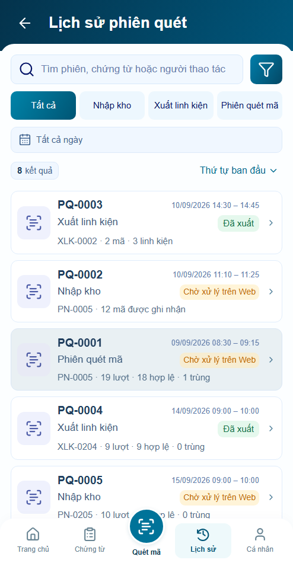
Sau · P23 r01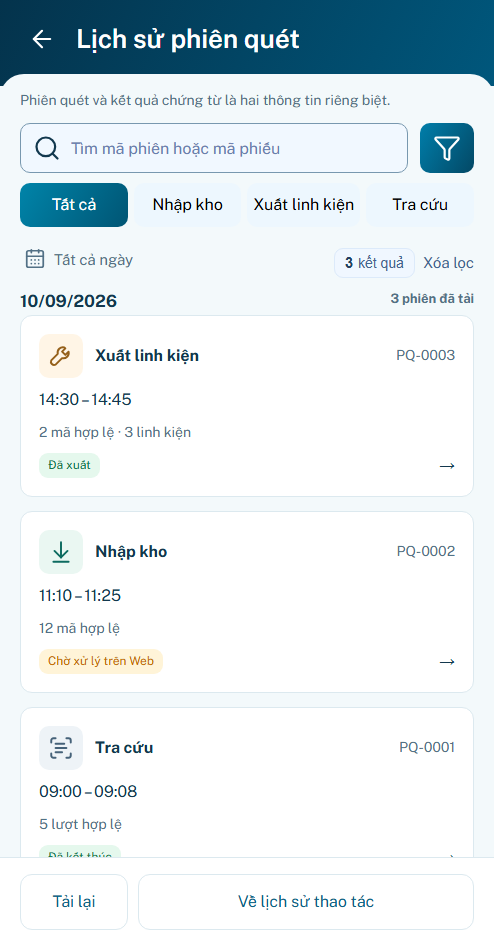
S04 · Chi tiết phiên quét
2mã/3linh kiện; rejected/duplicate riêng. Không dùng completed làm bằng chứng Post.
Trước · implementation kế thừa P08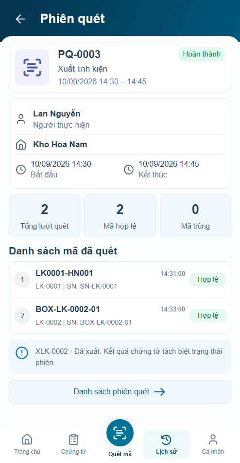
Sau · P23 r01
Nhánh quan trọng
Mặc định chưa có nguồn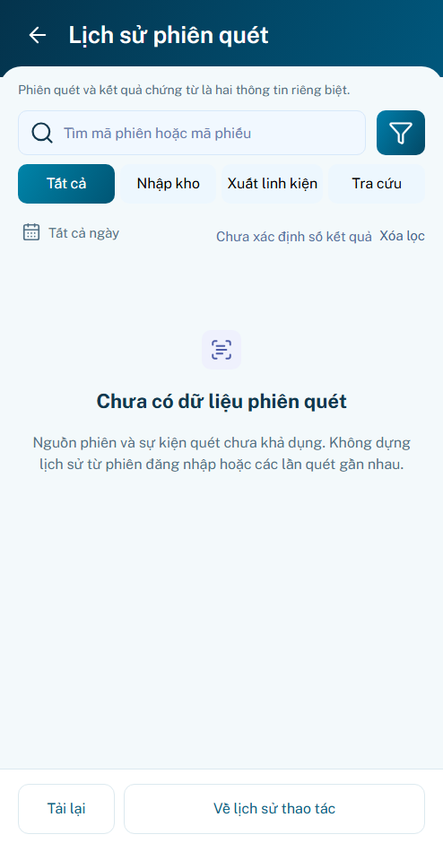
Hồ sơ đã trả khách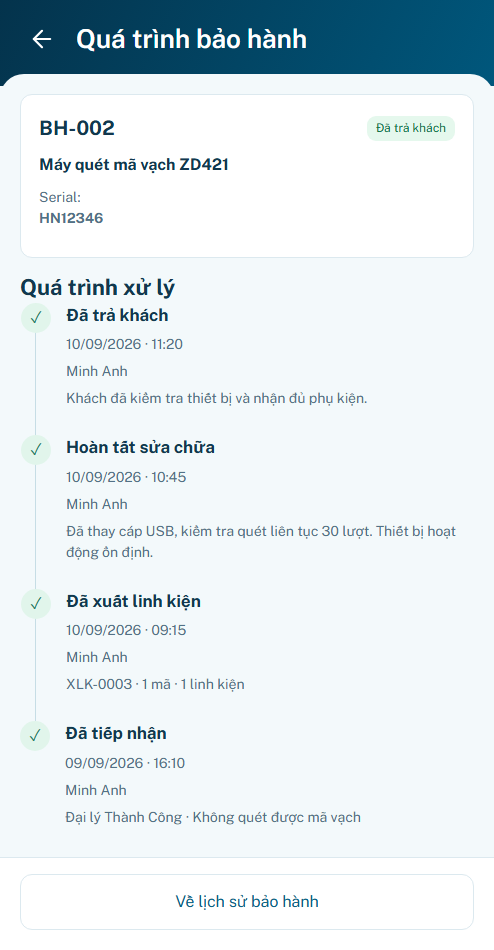
Nhập chờ xử lý trên Web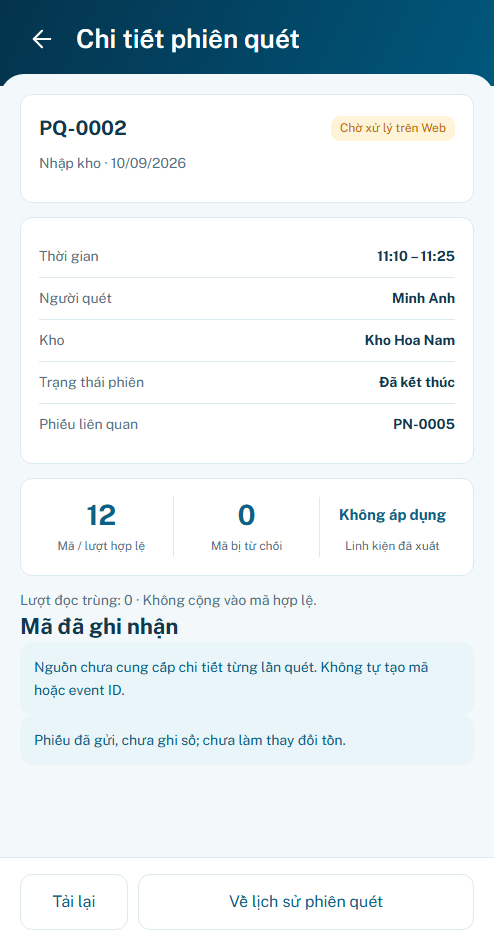
Tra cứu không tạo phiếu kho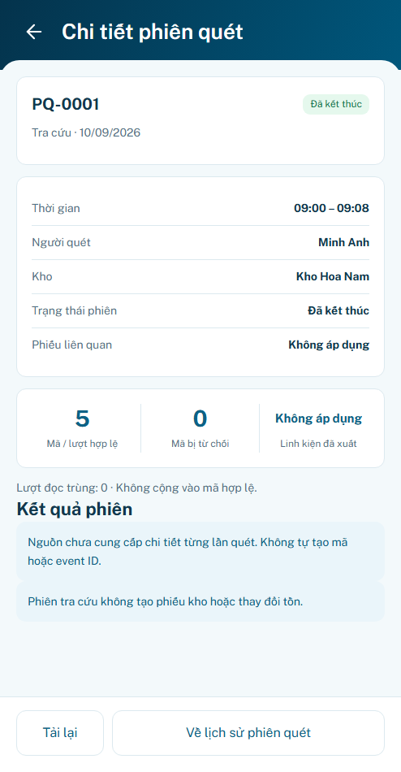
Thiếu số liệu không thành0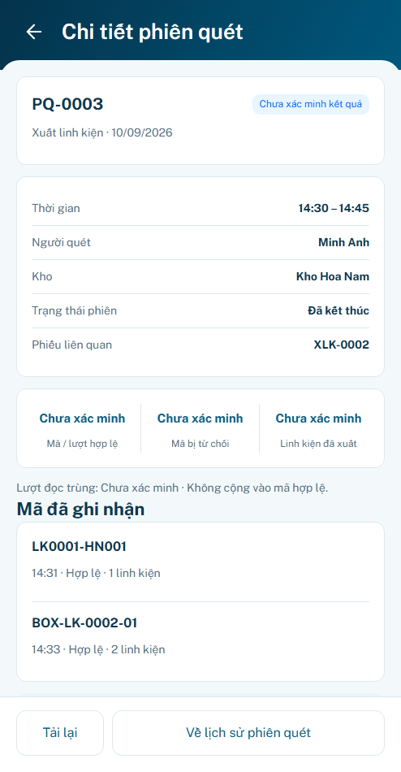
ID lạ không fallback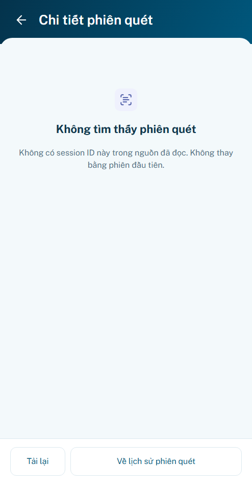
Read timeout giữ cache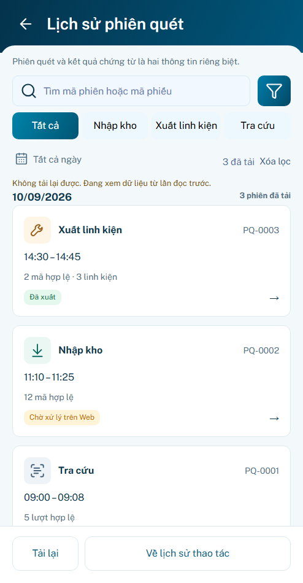
Ghi chú2000+ / reader chung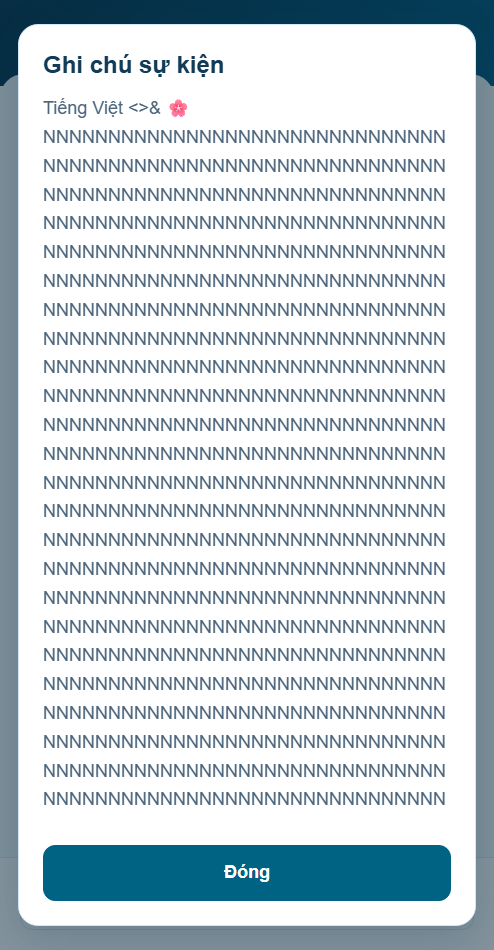
Không có API production được gọi. Backend/thiết bị thật/lưu bền chưa xác minh. P24 chưa hoàn tất. Không push/merge/deploy.